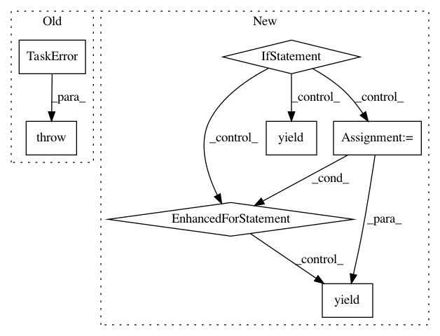

91cdde2ef79e87a9cb0d80cb55769bc23dc271cc,src/python/pants/backend/jvm/tasks/dependencies.py,Dependencies,console_output,#Dependencies#Any#,56
Before Change
raise TaskError("Unsupported option for Python target: is_internal_only: %s" %
self.is_internal_only)
if self.is_external_only:
raise TaskError("Unsupported option for Python target: is_external_only: %s" %
self.is_external_only)
for line in self._python_dependencies_list(target):
yield line
def _dep_id(self, dep):
After Change
if not self.is_internal_only:
// TODO(John Sirois): We need an external payload abstraction at which point knowledge
// of jar and requirement payloads can go and this hairball will be untangled.
if isinstance(tgt.payload, PythonRequirementLibraryPayload):
for requirement in tgt.payload.requirements:
yield str(requirement.requirement)
elif isinstance(tgt.payload, JarLibraryPayload):
for jar in tgt.payload.jars:
data = dict(org=jar.org, name=jar.name, rev=jar.rev)
yield ("{org}:{name}:{rev}" if jar.rev else "{org}:{name}").format(**data)
In pattern: SUPERPATTERN
Frequency: 3
Non-data size: 7
Instances
Project Name: pantsbuild/pants
Commit Name: 91cdde2ef79e87a9cb0d80cb55769bc23dc271cc
Time: 2014-08-19
Author: john.sirois@gmail.com
File Name: src/python/pants/backend/jvm/tasks/dependencies.py
Class Name: Dependencies
Method Name: console_output
Project Name: pantsbuild/pants
Commit Name: 991b6233b442369be2310ca58fbd7c4b93f72c89
Time: 2014-12-23
Author: tinystatemachine@gmail.com
File Name: src/python/pants/backend/core/tasks/what_changed.py
Class Name: WhatChanged
Method Name: console_output
Project Name: pantsbuild/pants
Commit Name: e77a650432097e3eeb867dfe4fec5235450414bf
Time: 2016-03-06
Author: cheister@gmail.com
File Name: src/python/pants/backend/graph_info/tasks/list_owners.py
Class Name: ListOwners
Method Name: console_output